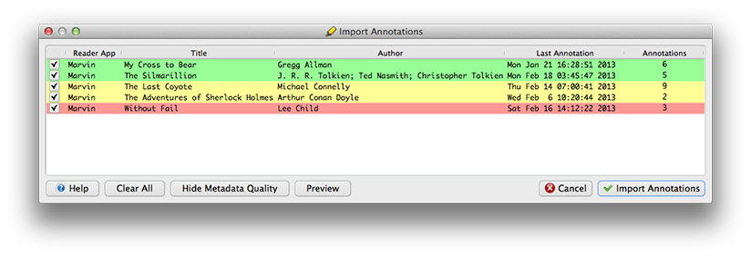
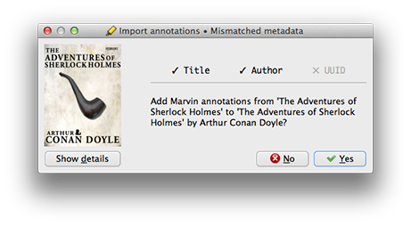
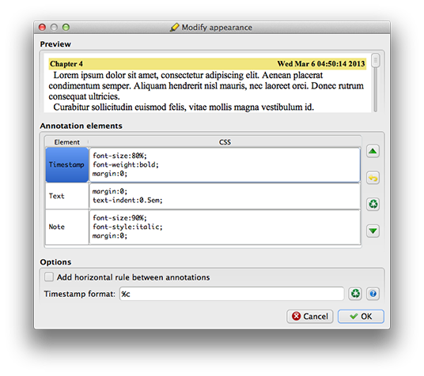
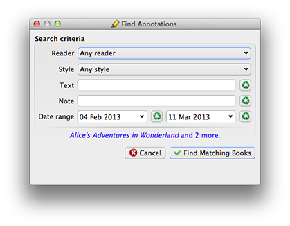

The Annotations plugin imports annotations from supported readers to calibre.
Features:
| Platform | Collect News clippings | Exporting | Fetching | |
|---|---|---|---|---|
| GoodReader | iOS | ✓ | ||
| Kindle | hardware | ✓ | ✓ | |
| Marvin | iOS | ✓ | ✓ | ✓¹ |
¹requires iExplorer
(OS X, Windows only)
Collect News clippings: Annotations made to periodicals generated by calibre may be collected to a single book. This feature can be enabled in the configuration dialog.
Supported readers may support either or both methods of adding annotations to calibre:
By default, the Annotations plugin will append annotations to existing content in the Comments column. It is recommended that you create a custom column for Annotations.
To create a custom column to store annotations, follow these steps in calibre:

After the incoming annotations have been analyzed, the Import Annotations dialog is displayed with a summary of available annotations. You may preview annotations from a specific book by selecting it and clicking Preview, or double-clicking the book.
Annotated books are scanned for their Title, Author and UUID metadata.
Books whose metadata matches a book in your library are displayed with a green background. When these annotations are imported, they will be added to the corresponding book without any further interaction.
Books with a partial metadata match are displayed with a yellow background. When these annotations are imported, you will be shown a summary of the matching and mismatching metadata, and prompted to confirm the likely destination, as shown in the dialog below.

Books with no matching metadata are displayed with a red background. When these annotations are imported, they will be added to the currently selected book in calibre after confirmation.
You can control the appearance of imported annotations in the Modify appearance dialog.

An annotation is composed of three elements - Timestamp, Text and Note. To change the display order of these elements, select the element in the Annotation elements section, then use the up or down arrows to move it. A live preview is displayed as you make changes.
To include a horizontal rule between annotations, enable the checkbox in the Options section.
The Timestamp format is configurable. For a list of available formats, click the help button to the right of Timestamp format.
After clicking OK, you will be prompted to update existing annotations to the new settings.
You can find annotations previously imported to calibre using the Find Annotations dialog.

For more information on the Annotations plugin, visit calibre's Plugins forum.